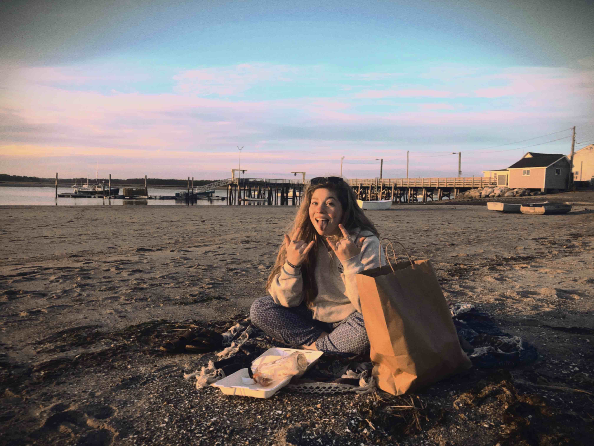
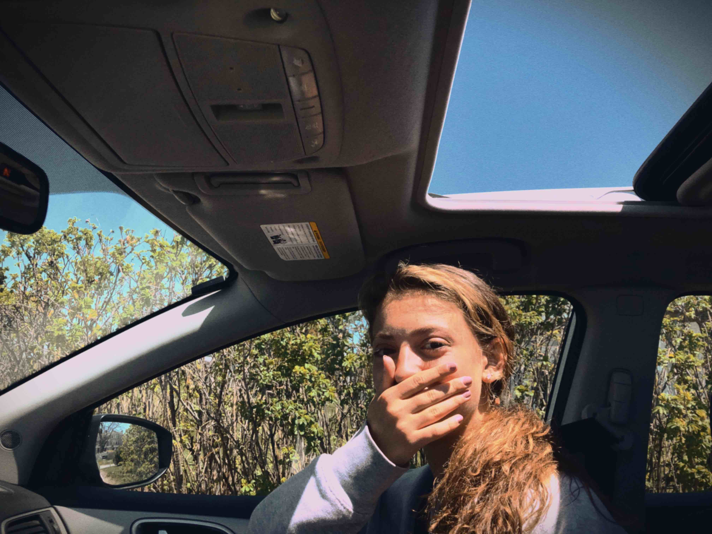

Throughout the pandemic I grew to appreciate the small things like drives with my friends down to the beach or around the Scarbrough and Cape Elizabeth area more and more. It became a relaxing activity for me to catch up with my friends and get breakfast or lunch after driving around and listening to good music. While my mom didn't always understand why I chose to waste all my gas going to the same places all the time it made sense to me and I think it helped to keep me sane and in a routine in the past year.
Read more
Read less